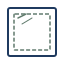
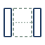
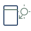

理由① 紹介型プラットフォームであることを、最初の電話から明示
ヨリハブはガラス修理を自社で施工せず、提携業者をご紹介する窓口です。「自社対応」風の曖昧表記や「加盟店」「協力会社」といった曖昧語は使いません。
東京23区の提携業者をご紹介。
出張費・お見積もりは0円／
金額にご納得いただいてから、
ガラスの発注・加工に進みます。
9:00〜21:00・年中無休
ご相談・お見積もり無料、納得まで発注進まず
発注前と追加作業発生時の2回、必ずご同意
違反業者は次回以降の紹介対象から除外
お子さまが庭で遊んでいて大きな窓を割ってしまった休日の午後。
空き巣に入られた翌朝の防犯不安。
朝起きたらベランダのガラスにヒビが入っていた賃貸のマンション。
数日前に熱割れしたペアガラスの相場探し──。
そして、業者探しでよく聞かれるのがこうしたご不満です。
ヨリハブは、こうしたご不安とご不満を「仕組み」から減らすためのご相談窓口です。
ヨリハブ自身はガラスの施工を行いません。
紹介するだけでは業者の対応にばらつきが出るため、すべての提携業者との間で、お客様の安心につながる3つの取り決めを契約で結んでいます。
ご相談・お見積もりは無料です。お見積もり金額にご納得いただくまで、ガラスの発注・加工には進みません。
ガラスの発注・加工に進む前と、追加作業が発生した時点の2回、必ずお客様のご同意をいただいてから作業を進めます。
電話口では幅のある目安金額をお伝えし、確定金額は現場の正式なお見積もりでご提示します。電話口で意図的に低額を提示し、現場で説明なく吊り上げる行為をした業者は、次回以降の紹介対象から除外します。
お客様に「悪質な業者を見抜く努力」を求めるのではなく、仕組みで品質を担保することが、ご紹介の窓口であるヨリハブの役割です。
次のような状況でお困りの方からのご連絡が中心です。

一般的な単層ガラス
光は通し視線は遮る
鉄線入りの防火ガラス

2枚重ねの断熱ガラス
特殊フィルム入り
耐久性の高いガラス

遮熱・断熱コーティング
お写真を拝見すれば判別します
ヨリハブは、神田圭佑が個人事業として運営する、窓ガラス修理・交換のご紹介サービスです。
ご依頼の受付から提携業者のご紹介までを、運営者自らが責任を持って対応します。
「ガラスが割れた日に、どこに電話していいか分からない」というお客様の一番不安な瞬間に、最初に声が届く場所でありたい。その思いで、東京23区を対象に2026年5月から本サービスを開始しました。
※運営会社情報・所在地・連絡先などの詳細は、ページ下部の折りたたみメニューに掲載しています。
1つは割れたガラスそのもの。
もう1つは、「誰に頼めばいいか分からない」という不安です。
実は、後者のほうが厄介です。
「電話で2万円と言われたのに、現場で8万円になった」
「土曜の午後に電話したら、月曜まで待ってくれと言われた」
「現場調査に来てもらった後、見積もりが届かないまま連絡が途絶えた」
「火災保険が使えることを、別の業者に言われて初めて知った」
──業者選びで後悔した方の声は、業界に静かに、数多く残っています。
ヨリハブは、ガラスそのものを直すサービスではありません。
「誰に頼めばいいか分からない不安」を、仕組みで減らすための窓口です。
施工事例・お客様の声は現在準備中です。
ご依頼いただいた案件のなかから、お客様のご了承をいただいたうえで順次掲載してまいります。
| 比較軸 | 従来の業者（一般論） | ヨリハブ |
|---|---|---|
| ビジネス構造 | 自社施工・加盟店方式（不明瞭） | 紹介型プラットフォーム（明示） |
| 発注前の同意 | 業者任せ | 必ずご同意を取ることを契約で取り決め |
| 追加作業時 | 作業後の追加請求事例あり | 作業前に必ずご説明・ご同意 |
| 違反業者対応 | 個別クレーム対応 | 次回以降の紹介対象から除外 |
| 賃貸対応 | 管理会社連絡は自己対応 | 連絡手順からご案内 |
| 出張費 | 業者により異なる | 0円（提携業者との契約で取り決め） |
| 見積もり後キャンセル料 | 業者により異なる | 無料（提携業者との契約で取り決め） |
※「従来の業者」は業界の一般論を示したもので、特定の業者を指すものではありません
ヨリハブはガラス修理を自社で施工せず、提携業者をご紹介する窓口です。「自社対応」風の曖昧表記や「加盟店」「協力会社」といった曖昧語は使いません。
ガラスの発注・加工の前と、想定外の追加作業が発生した時点の2回、作業前に必ず内容と金額をご説明し、ご同意をいただいてから進めます。
「管理会社と業者、どちらに先に連絡すべきか」など、賃貸特有の疑問にお電話の段階でお答えします。
おとり見積もり、事前説明なしの追加請求、同意を得ない作業開始をした業者は、次回以降のご紹介から外します。
9〜21時受付／約5〜10分
初めての方も状況を話すだけでOK
Step 1に含む
賃貸の方には管理会社への連絡手順をご案内
お電話から約10〜30分以内
お客様ご自身で複数社に電話する必要はありません。ヨリハブが業者に当日対応の可否を確認したうえでご紹介します
到着後15〜30分
お見積もり金額にご納得いただくまで発注には進みません
30分〜2時間・症状による
追加作業時は作業前に必ずご説明・ご同意
お電話でのご相談・ヒアリングに料金はかかりません。
提携業者による現場でのお見積もりに、出張費は発生しません。
お見積もり金額にご納得いただけない場合は、そのままご辞退いただいて構いません。
以上3点は、提携業者との契約で取り決めています。
台風・突風で飛来物がぶつかり割れた
泥棒に割られた・空き巣被害
お子さまの事故で割れた
ペアガラスの熱割れ（自然発生）
火災保険や家財保険に「破損・汚損」や「風災・雪災」等の特約が付帯している場合、ガラスの修理費用が対象になることがあります。賃貸の方でも、ご自身で加入されている家財保険で対応できるケースがあります。
保険会社への連絡手順もお伝えしますので、まずはお気軽にご相談ください。
| 案件タイプ | 目安価格帯 |
|---|---|
| 単品割れ（小窓1枚・単板ガラス） | 3〜8万円 |
| リビング大型ガラス1枚 | 10〜20万円 |
| ペアガラス・複数枚 | 15〜30万円 |
| サッシごと交換 | 20〜50万円 |
※表示は提携業者の実績に基づく目安です。
実額は現場状況（ガラスの種類・サイズ・建物階数・搬入経路等）により変動します。
電話口では幅のある目安金額をお伝えし、確定金額は現場の正式なお見積もりでご提示します。
※火災保険が適用されるケースでは、自己負担額が軽減される可能性があります。
原則として、まず管理会社または大家さんへのご連絡が必要です。勝手に業者を呼んで修理をすると、退去時に原状回復費の扱いでトラブルになるケースがあります。ヨリハブではお電話で状況をうかがったうえで、管理会社への連絡手順からご案内します。
使える可能性があります。ご契約の火災保険に「破損・汚損」「風災・雪災」等の特約が付帯している場合、ガラスの修理費用が対象になることがあります。賃貸でも、ご自身で加入されている家財保険で対応できるケースがあります。保険会社へのご連絡手順もお伝えしますので、お気軽にご相談ください。
お見積もり後のキャンセル料は一切かかりません。お見積もり金額にご納得いただくまでガラスの発注・加工には進まないことを、提携業者と契約で取り決めています。ご納得いただけない場合は、そのままご辞退いただいて構いません。
電話口でお伝えするのは、状況をうかがったうえでの「概算の目安」です。現場でガラスのサイズ・種類・搬入経路等を確認することで正式なお見積もりが出ます。電話口で意図的に低額を提示して現場で吊り上げる行為をした業者は、次回以降の紹介対象から外します。
サイズ・ガラスの種類・階数により幅がありますが、ペアガラス1枚のみの交換であれば、目安として15〜30万円の範囲に収まるケースが多いです。リビングの大型ガラスやLow-E・防犯ガラスの場合は上限寄りになる傾向があります。現場確認後に正式なお見積もりをお出しします。
ヨリハブでは、追加作業が発生した場合には作業前に必ずお客様の同意を取ることを提携業者と契約で取り決めています。同意なく作業を進めて事後に追加請求を行った業者は、次回以降の紹介対象から外します。お客様ご自身で業者を「見抜く」必要のない仕組みを目指しています。
ご契約内容と保険会社の判断によりますが、熱割れは「破損・汚損」の枠で保険対象となるケースがあります。原因特定のための写真撮影や保険会社への連絡手順を、お電話口でご案内します。
ヨリハブの受付時間は9:00〜21:00（年中無休）です。21時以降にご連絡をいただいた場合は、翌朝9時以降の折り返しとなります。深夜の応急処置（段ボール・養生テープでの飛散防止など）の手順は、9時以降のお電話でご案内できます。
単板の透明ガラス、すりガラス、型ガラス、網入りガラス、ペアガラス、防犯ガラス、強化ガラス、Low-Eガラスなど、住宅で使われる主要なガラスに対応しています。特殊なガラスの場合も、現場確認後に対応可否と金額の目安をお伝えします。ご不明な場合は、写真を1枚撮影してお電話いただければ判別しやすいです。
ヨリハブでは以下の基準で提携業者を選定しています。
基準を満たさなくなった業者は、紹介対象から除外します。
緊急の方はまずお電話ください。
営業時間内（9:00〜21:00）でしたら、お電話口でヒアリングを行い、当日対応可能な提携業者を選定してご紹介します。21時以降のお電話は、翌朝9時以降の折り返しとなります。
ヨリハブは窓ガラス修理のご紹介窓口です。
お支払いは、ご紹介先の提携業者に直接お支払いいただく仕組みで、ヨリハブがお客様から施工費用や仲介手数料をいただくことは一切ありません。
万が一、ヨリハブを名乗る者から金銭の請求があった場合は、詐欺の可能性がありますのでご注意ください。
現金・銀行振込・各種クレジットカード（VISA・JCB・Mastercard）
※対応可能な決済手段は提携業者により異なります。現場での作業前にご確認ください。
この2つの不安を、仕組みから減らしたい──それがヨリハブを立ち上げた理由です。
今日中に直す。追加費用は必ず事前にご説明する。
これがヨリハブのお約束です。
9:00〜21:00・年中無休
🗺️ 対応エリア：東京23区
まずはお気軽にお電話ください。